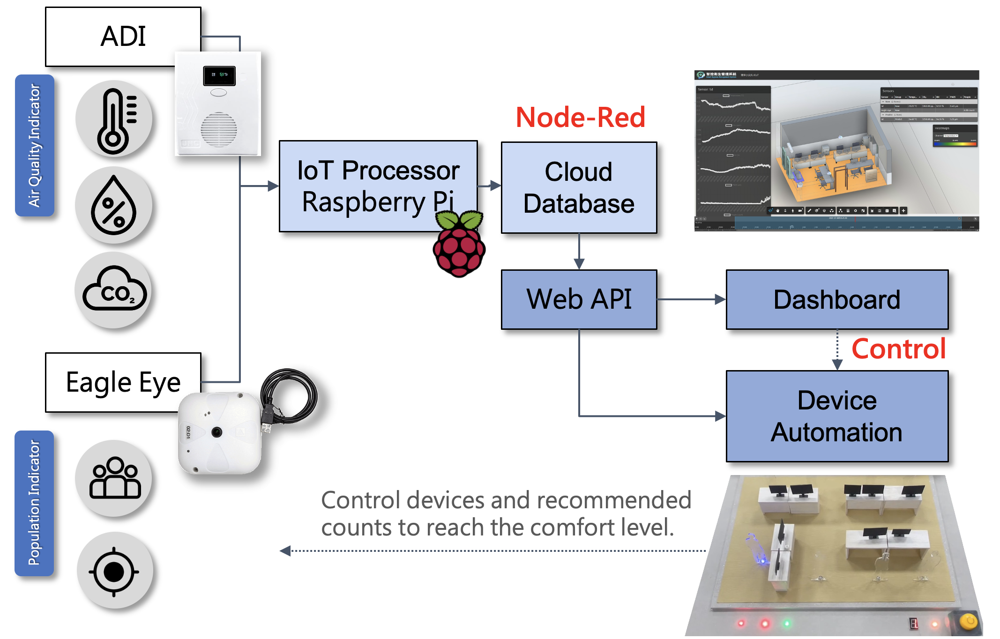

Portfolio
Eco Pioneer
The Intelligent Hygiene Management System
in the Post-COVID19 Era
IEEE Signal Processing Society & Taiwan Tech
2022.3 - 2022.7
#AIoT #BIM #Digital Twin #Real-Time
#Raspberry Pi #Management System
0. NEW LIFESTYLE
in the Post-
COVID19 ERA
# Covid-19
# AIoT
# Digital Twin
# Data Visualization
The rapidly spreading epidemic of 2020 has radically changed the pattern of life,
and in order to maintain work in between the epidemics,
WFH has become a completely new mode of work,
sometimes with an unavoidable decrease in productivity.
Therefore, we propose a solution, conduct a prototype test for this solution,
and finally propose a future vision for this solution.
Although there is no way
to detect the level of viruses in the air, the most fundamental way to
prevent infectious diseases is to maintain public spaces in a state of
good hygiene to minimize the spread of viruses. We have found from experimental
studies related to epidemiology that indoor air temperature, humidity,
and carbon dioxide are recommended to be maintained at specific values in order
not to jeopardize health, productivity, and risk of infection.
1. DESIGN
PROCESS
with
Digital-Twin
# AIoT
# Sensors
# Digital Twin
# Visualization
# Machine Learning
We utilized sensors to quantify
these environmental parameters, but even though the data was readily available,
it was difficult to operate. Therefore, we wanted to automate the control of indoor
quality through the development of digital bi-living technology through Building
Information Modeling. By visualizing the sensor data in 3D in real time,
we can show the space and its historical environmental parameters, such as air parameters,
pedestrian flow status, etc. through a webpage to assist managers or users in decision-making.
In addition, the collected data is also assigned to environmental health
assessment indicators, and this historical data is used to predict user behavior
and air quality using machine learning for automated control and behavioral recommendations.
We want to achieve the highest quality and efficiency of indoor space comfort through the whole system.
2. PROTOTYPE
IMPLEMENTATION
with Real-Time
DASHBROAD
# AIoT
# Real-Time
# Digital Twin
# Visualization
# Mechanism
To test this proposal,
we used the research office of National Cheng Kung University as a test site for the dual generation
of information on environmental quality data. The goal of the trial is
to provide a platform for users to monitor the current quality,
to create the possibility of automated control of air conditioning, and to provide
recommendations on whether users should go or not.
In the office, we deployed the
Eagle Eye and placed the air detector AIDs
in the most suitable locations based on the results of
the BIM-assisted calculations of the building information modeling,
so that we were able to obtain the air health indicators and indoor human
indicators of the site.

After obtaining these
environmental indicators, we send the information to the IoT base station and
create a database for it, and then control the automated instruments through
the web page of the digital binary meter. After the control behavior occurs,
the control behavior can be modified when the sensor detects an improvement in quality.
We use Autodesk Forge as
the integration platform to build the control webpage, so that the model
of any field can be personalized to design the interface, that is
to say, our system is universal. In this web page,
users can view sensor locations, historic data,
numerical visualization, and even design air conditioning control through the platform.
3. GRADING
SYSTEM
and RESPONSE
MECHANISM
# AIoT
# SVM
# Digital Twin
# Scenario
# Automation
In order to define the comfort level of the space,
we set up a mechanism to evaluate whether the value is comfortable for the user to stay in the space,
based on the results of the sensors, and to assess the level of quality that needs to be improved
with a score of 2 points for the red status, 1 point for the yellow status, and 0 point for the green status.
The sum of these index scores indicates the degree to which the quality of the space needs to be improved,
and the corresponding scores can generate different responses, such as turning on the equipment, warning lights, notification, no entry, etc.
The results of these indicators are used to assess whether the value is comfortable for the user to continue to stay in the space.
In addition, with the historic data collected by the sensors,
we use SVM machine learning to predict user behavior or air changes, and can make suggestions in advance
or automatically turn on the air conditioner. This page shows several prediction scenarios we set up.
In scenario 3, we can use artificial intelligence to recognize the location of frequently appearing people,
and carry out localized control. When the distribution of people is dense, we can also automatically turn on
the air cleaner, so that in addition to maintaining the quality of the air,
we can also save unnecessary energy expenses.
We believe that the
Intelligent Hygiene Management System will lead to a higher quality
of life in the future. This system can achieve one-click control,
efficiency tracking, and even personal health tracking by identifying
users in multi spaces.
In addition, for large open spaces, it can combine multiple point sensors to
manage large areas, for example, to give the most appropriate recommendations for
social distance density, or targeting specific areas for negative pressure exhaust
from the air conditioning system to avoid dirty air circulation in the indoor space.
An architect and computer engineer dedicated to crafting innovative
Human-Computer Interfaces that integrate the convergence of the digital
and physical realms.

Leave a comment